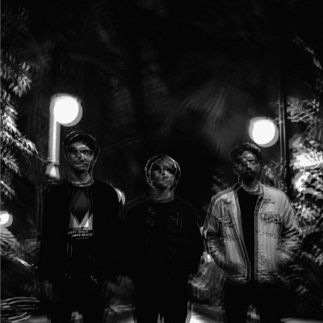

kir_tsi_kos está aplicando el estilo particular Particular1extra a este párrafo
kir_tsi_kos ha creado este párrafo y cumple un selector descendente
kir_tsi_kos ha creado todo el contenido anteriormente presentado. Nos despedimos del primer ejercicio del examen